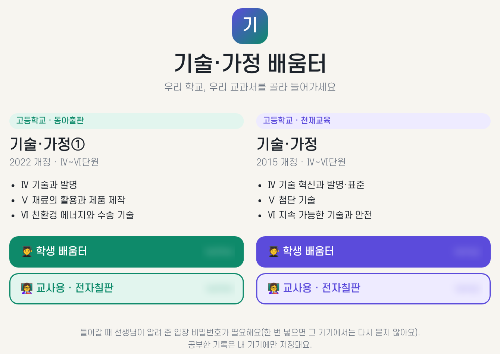

EP 12
추천: 클로드 코드
단원 자료를 넣으면 학생용 수업 사이트가
작은 판 약 30분, 차시 늘리기는 차시당 약 10분
수업 자료가 폴더, 메신저, 학습지 파일로 흩어져 있으면 학생은 "어디 있어요?"를 자주 묻습니다. 단원마다 주소(링크) 하나로 모으면 학생은 휴대폰이나 교실 TV에서 그날 차시 페이지만 열면 됩니다. 이 장에서는 중학교 기술·가정의 기술 영역을 예로 듭니다. 단원 이름은 모두 [대괄호] 예시이니 내 단원으로 바꿔 쓰세요.
사이트는 한 번 만들고 끝이 아니라 차시를 늘리고 글자를 고치며 계속 손보게 됩니다. 그래서 결과가 '계속 고쳐 쓸 사이트'일 때 알맞은 클로드 코드로 진행합니다. 처음 한 번 문서만 뽑아 보고 싶다면 Cowork나 채팅으로도 초안은 받을 수 있지만, 이 장의 순서는 클로드 코드를 기준으로 적었습니다.
확인하세요
수업 목적 이용이 허용되는 조건
수업 목적 이용(저작권법 제25조)이 허용되는 조건(정확한 요건은 법령 원문과 한국저작권위원회 안내로 확인하세요)은 다음과 같습니다.
자세한 기준은 한국저작권위원회·KERIS 교육 저작권 안내를 보세요.
바로 만들지 말고 "어떤 페이지가 생길지"부터 받습니다. 아래 1번 프롬프트를 보내면 단원 첫 화면 1개, 차시 페이지 [N]개, 페이지마다 들어갈 칸(학습 목표, 핵심 개념 요약, 활동 안내, 확인 퀴즈, 활동지 내려받기)이 표로 나옵니다.
화면에는 먼저 "파일을 읽어도 될까요?" 같은 허락 질문이 보일 수 있습니다. 어느 파일을 읽는지 확인하고 허락합니다. 왜 지도부터일까요? 집을 지을 때 설계도를 먼저 보는 것과 같습니다. 표가 틀렸을 때 고치는 비용이 가장 쌉니다. 마음에 안 드는 곳은 말로 고칩니다. 클로드가 표 대신 바로 파일을 만들기 시작하면 "아직 만들지 말고 표만 보여 줘"라고 다시 말합니다.
지도가 확정되면 2번 프롬프트로 첫 화면과 1차시 페이지 하나만 만듭니다. 클로드가 "사이트 폴더를 만들고 파일을 저장해도 될까요?"라고 물으면 위치를 읽고 허락합니다. 끝나면 작업 폴더 안에 새 폴더와 .html 파일이 생깁니다.
파일을 여는 법은 간단합니다. 탐색기에서 첫 화면 파일(예: index.html)을 두 번 누르면 크롬이 열립니다. 어느 파일인지 모르겠으면 클로드에게 "어떤 파일을 열면 첫 화면이야?"라고 묻습니다. 전부 만들면 틀린 곳을 찾기 어렵기 때문에 작은 판 하나로 글자 크기, 버튼, 색을 먼저 정합니다. 크롬 창을 좁혀 휴대폰 크기로 만들어 보면 감을 잡기 좋습니다.
1차시 페이지가 마음에 들면 "이 틀을 그대로 써서 2차시를 만들어 줘"라고 합니다. 새 차시 파일이 생기고, 첫 화면의 차시 목록에 링크가 하나 늘어납니다. 차시마다 디자인이 달라지지 않는 이유는 같은 틀을 쓰기 때문입니다. 한 번에 한두 차시씩 늘리세요.
잘 안 되면: 새 차시를 만들 때 대화가 길어져 틀을 잊는 일이 있습니다. 이때는 "1차시 페이지 파일을 다시 읽고 같은 틀로 만들어 줘"라고 하면 됩니다.
내 휴대폰으로 열고, 교실 TV나 큰 모니터에도 띄워 봅니다. 사이트는 여러 파일로 되어 있어 html 하나만 보내면 사진·차시 링크가 깨집니다. 먼저 PC 크롬에서 F12 키를 누르면 화면 옆에 개발자 창이 열립니다. 그 창 왼쪽 위의 휴대폰 모양 버튼을 누르면 휴대폰 크기로 보입니다(버튼 위치는 크롬 버전에 따라 다를 수 있습니다). 실제 휴대폰 확인은 아래 '저작권 점검'(3번 프롬프트)과 공유하기 절차를 마치고 올린 뒤에 주소로 합니다. 차시 목록의 링크가 모두 열리는지, 활동지 내려받기가 되는지 직접 누릅니다.
이상한 점은 캡처해서 "무엇을 눌렀더니 이렇게 보여"와 함께 클로드에게 그대로 말합니다. 눈으로 보는 확인은 클로드가 대신할 수 없습니다. 퀴즈의 정답도 내가 읽고 확인합니다.
잘 되는 상태에서 "여기까지 저장 지점(커밋)으로 남겨 줘"라고 합니다. 커밋은 게임의 세이브 포인트와 같습니다. 차시를 늘리다 망가져도 마지막으로 잘 되던 때로 돌아갈 수 있습니다.
공유 전에 아래 3번 프롬프트로 문제될 부분을 표시받아 내가 판단합니다. 표에는 어느 파일 몇 쪽이 왜 문제인지, 어떻게 바꾸면 되는지가 보입니다. 그다음 공유 방식을 정합니다.
다음에 이어 작업할 때는 같은 작업 폴더를 열고 "이 폴더의 사이트를 읽고 지금 어디까지 만들었는지 정리해 줘. 3차시부터 이어서 하자"라고 시작합니다. 클로드는 지난 대화를 모두 기억하지 못할 수 있으므로, 폴더의 파일과 저장 지점이 기억 역할을 합니다.
1. 사이트 지도만 받기 · 클로드 코드
중학교 기술·가정의 기술 영역 [단원이름] 단원을 학생이 휴대폰으로 보는 수업 사이트로 만들고 싶어. 폴더의 [차시계획.hwpx]와 [평가기준.hwpx]를 읽어 줘. 아직 만들지 말고 사이트 지도만 표로 보여 줘. - 단원 첫 화면에 들어갈 것 - 차시별 페이지에 공통으로 들어갈 칸(학습 목표, 핵심 개념 요약, 활동 안내, 확인 퀴즈, 활동지 내려받기) - 차시마다 쓸 자료 파일 이름 교과서 본문과 그림은 쓰지 말고, 필요하면 "교과서 [쪽수]" 안내로만 적어 줘. 모르는 게 있으면 시작 전에 질문해 줘.
2. 작은 판 만들기 · 클로드 코드
지도대로 단원 첫 화면과 1차시 페이지만 만들어 줘. HTML 파일로, 휴대폰 화면에서 글자가 크고 버튼을 누르기 쉽게. 핵심 개념 요약은 [차시계획.hwpx]의 내용을 중학생이 읽기 쉬운 말로 다시 써 줘. 확인 퀴즈는 3문제로, 답을 누르면 맞았는지 알려 줘. 활동지는 [1차시_활동지.pdf]를 내려받는 버튼으로 연결해 줘. 끝나면 2차시를 만들 때 재사용할 틀이 어디인지 알려 줘.
3. 저작권 문제될 부분 표시받기 · 클로드 코드
이 폴더의 사이트 파일과 이미지, 자료를 모두 살펴보고 저작권 문제가 될 수 있는 부분을 표로 표시해 줘. 교과서 본문을 그대로 옮긴 문장, 교과서나 출판사에서 가져온 것으로 보이는 그림·표, 출처를 알 수 없는 이미지가 대상이야. 위치(파일, 쪽), 이유, 대체 방법(내 말로 다시 쓰기 / 교과서 쪽수 안내 / 직접 찍은 사진)을 적어 줘. 아직 고치지는 말고 표시만 해 줘.
왜 이렇게 말하나요?
화면에서 일어나는 일 (예시)
나: (프롬프트 1을 보냅니다)
클로드: 차시계획에는 [6]차시가 있습니다. 사이트는 첫 화면 1개와 차시 페이지 6개로 제안합니다. 표를 보여 드립니다. 3차시는 활동지가 없는데 만들어 둘까요, 아니면 빼 둘까요?
나: 3차시는 활동지 없이 사진만 넣어 줘.
클로드: 알겠습니다. 표를 고쳤습니다. 이대로 만들 때는 이 폴더에 [사이트] 폴더를 만들고 파일을 저장해도 될까요?
나: (표를 읽고) 좋아. 이제 프롬프트 2를 보냅니다.
공개 여부에 따라 고릅니다. 먼저 EP 8에서 본 방식 그대로, 올리기 전에 개인정보와 저작권 검사를 합니다.
| 경우 | 방법 |
|---|---|
| 누구나 봐도 되는 자료(내가 만든 요약·활동지, 직접 찍은 사진: 학생 얼굴·이름 없음, 학생 작품은 동의 받은 것) | Firebase Hosting(공개 웹 주소). 세팅 장의 Firebase 준비를 마쳤다면 클로드 코드에게 "Firebase에 올려 줘"라고 합니다. |
| 교과서·출판사 자료가 조금이라도 섞였거나, 우리 반 학생만 보게 하고 싶음 | 학교 학습 플랫폼에 올립니다(우리 반 학생만, 일부분, 출처 표시). 쿨메신저·메일로 나눌 때도 같은 조건을 지키고, 출판사 자료를 뺀 뒤에만 보냅니다. 교과서 원문 파일은 어떤 경로로도 나누지 않습니다. |
4. 공유 안내받기 · 클로드 코드
이 사이트를 [학생들이 링크만 눌러서] 볼 수 있게 하고 싶어. Firebase Hosting으로 올리는 방법을 코딩 초보 기준으로 한 단계씩 안내해 줘. - 내 Firebase 프로젝트가 이 폴더에 연결돼 있는지 확인해 줘. 안 돼 있으면 어떻게 연결하는지 알려 주고, 바꾸기 전에 물어봐 줘. - 사이트 폴더 전체(첫 화면 index.html, 차시 페이지, css, 사진, 활동지 pdf)를 public 폴더에 넣어 줘. 첫 화면만 index.html이고, 차시 파일 이름과 링크는 그대로 둬. 올리기 전에 학생 이름·사진·연락처가 없는지, 교과서에서 가져온 내용이 없는지 한 번 더 확인해 줘. 내가 "했어"라고 하면 다음 단계로 넘어가.
Firebase 준비와 올리는 절차는 세팅 장 5절을 보세요.
올리기, 공개하기는 되돌리기 어려운 일입니다. 클로드가 "올려도 될까요?"라고 물으면 무엇이 누구에게 공개되는지 읽은 뒤에만 허락하세요.
발표자 사례: 기술·가정 배움터
발표자는 기술·가정 수업 사이트를 입구 페이지 하나와 교과서별 사이트로 나누어 운영합니다. 아래 그림이 실제 입구 화면입니다(사이트 주소는 가렸습니다).

5. 학생용·교사용 나누고 올리기 전 검사 만들기 · 클로드 코드
내 수업 사이트를 [학생용]과 [교사용]으로 나누고 싶어. - 학생용 사이트에는 학생이 볼 자료만 넣어 줘. 교사용 자료(정답·평가 기준)는 이 사이트에 아예 올리지 마. 공개 주소에 올라간 파일은 링크가 없어도 주소만 알면 열려. - 사이트 첫 페이지에 검색 엔진이 수집하지 않도록 noindex를 넣어 줘. - 올리기 전에 실행하는 검사를 만들어 줘. 허용한 파일 종류(html, js, css, jpg, png, woff, 활동지 PDF를 올릴 경우 pdf)만 통과시키고, 그 밖의 파일이 있으면 이름을 알려 주며 멈추게 해 줘. 먼저 코드를 쓰지 말고 폴더 구성을 계획으로 알려 줘. 올리는 일은 내가 허락하기 전에는 하지 마.
확인하세요
이럴 땐
지도 먼저, 한 차시 먼저, 같은 틀로 늘리고, 공개하기 전에 저작권을 표시받아 내가 판단하세요.
EP 13
Cowork·채팅·클로드 코드 모두 (캔바 커넥터)
클로드가 캔바에서 슬라이드를 직접 만듭니다
연결 약 10분, 슬라이드 만들기 약 5분
클로드는 원래 글과 파일을 다룹니다. 캔바(디자인 사이트)의 내 계정까지 쓰게 하려면 '연결'이 필요합니다. 이 연결 방식을 MCP라고 부릅니다. 쉽게 말해 클로드에게 다른 앱을 쓰게 해 주는 연결 단자(플러그)입니다. 플러그를 꽂으면 클로드가 내 캔바에서 디자인을 만들고 고칠 수 있습니다.
캔바 커넥터(캔바와 클로드를 잇는 연결)는 세 도구에서 모두 쓸 수 있지만, 일하는 방식이 다릅니다. 연결 방법과 지원 여부는 버전과 요금제에 따라 달라질 수 있으니 공식 안내도 함께 확인하세요.
| 도구 | 캔바를 이렇게 씁니다 | 알맞은 경우 |
|---|---|---|
| 채팅 | 대화로 "5장짜리 슬라이드 만들어 줘"라고 부탁합니다. 차시 내용은 내가 복사해 붙여 넣습니다. | 짧은 디자인 한두 개, 문구 다듬기 |
| Cowork | 맡긴 폴더의 차시 요약 파일을 읽고, 캔바에 만든 뒤 결과 링크나 파일을 폴더에 남깁니다. | 문서·디자인만 만들 때(슬라이드, 포스터, 안전 수칙) |
| 클로드 코드 | 수업 사이트 파일과 같은 작업 안에서 차시 내용을 읽어 캔바 디자인을 만들고, 사이트에 연결하는 일까지 이어 갑니다. | EP 12 사이트와 함께 쓸 때 |
고르는 기준은 간단합니다. 문서·디자인만 필요하면 Cowork나 채팅, 사이트와 함께 쓰면 클로드 코드입니다. 어느 쪽이든 아래 프롬프트는 거의 그대로 쓸 수 있습니다.
| 할 수 있는 일 | 예 |
|---|---|
| 디자인 새로 만들기, AI로 디자인 생성 | 프레젠테이션, 포스터 초안 |
| 내 디자인 검색 | "지난달 만든 안전 수칙 포스터 찾아 줘" |
| 디자인 편집 | 글자 바꾸기, 이미지 바꾸기 |
| 크기 바꾸기(리사이즈) | 슬라이드를 카드뉴스 크기로 |
| 브랜드 템플릿 자동 채우기 | 행사명·날짜 목록이나 가명(학생01…) 목록을 주면 여러 장을 한 번에 (요금제에 따라 쓸 수 없을 수 있음) |
| 내보내기 | PNG, PDF 등으로 저장 |
| 댓글 달기, 브랜드 키트 보기 | 검토 의견 남기기, 색·글꼴 확인 |
이 범위 밖의 일(예: 학생 개인정보가 든 파일 처리)은 기대하지 마세요. 실명 명단은 캔바에도 넣지 않습니다. 또 클로드는 캔바에 새로 만들거나 바꾸기 전에 허락을 묻습니다. 읽고 허락하세요.
Claude 앱(웹·데스크톱)에서 사용자 지정(Customize) → 커넥터(Connectors)로 들어가 커넥터 목록에서 Canva를 찾아 연결합니다(공식 도움말 기준, 2026년 11월 확인). 그다음 캔바 계정으로 로그인하고, 클로드가 내 캔바를 쓰는 권한을 읽어 보고 허락합니다. 메뉴 이름과 위치는 버전마다 다를 수 있습니다.
화면에는 캔바 로그인 창과 "이 앱이 내 계정에 접근하려 합니다" 같은 권한 안내가 보일 수 있습니다(예시). 한 번 연결하면 채팅과 Cowork에서 같은 연결을 쓰는지는 환경에 따라 다를 수 있으니, 안 되면 각 도구에서 연결 상태를 확인합니다. 권한을 읽고 허락하는 이유는 내 캔바 계정에 클로드가 들어오는 문을 내가 직접 여는 일이기 때문입니다.
터미널판은 MCP 서버를 추가하는 명령을 씁니다. 캔바 커넥터 안내 페이지에 적힌 서버 주소는 https://mcp.canva.com/mcp이고, 클로드 코드에서는 claude mcp add --transport http canva https://mcp.canva.com/mcp 형태로 추가한 뒤 캔바 로그인을 합니다. 주소는 바뀔 수 있으니 처음 한 번은 아래 1번 프롬프트로 공식 안내와 맞는지 확인하세요. 클로드가 알려 준 명령도 실행하기 전에 읽고 허락합니다. 앱 안에서 쓰는 분은 이 단계를 건너뛰어도 됩니다.
"내 캔바 디자인 목록을 보여 줘"처럼 가벼운 일을 시켜 봅니다. 디자인 이름 목록이 나오면 연결된 것입니다. 캔바에 디자인이 하나도 없으면 빈 목록이 나올 수 있으니, 그때는 "캔바에 연결된 게 맞는지 확인해 줘"라고 묻습니다. 큰 일을 맡기기 전에 가벼운 일로 확인하는 이유는 문제가 있을 때 원인을 빨리 좁히기 위해서입니다.
EP 12 사이트의 차시 핵심 개념을 클로드에게 주고 캔바에서 프레젠테이션을 만들게 합니다(아래 2번). 클로드는 먼저 장별 제목 목록을 보여 주고 "이 구성으로 만들어도 될까요?"라고 묻습니다. 목록을 읽고 고칠 곳이 없으면 "만들어 줘"라고 합니다. 채팅이라면 차시 내용을 프롬프트 아래에 붙여 넣습니다.
클로드가 준 캔바 링크를 눌러 열고 내가 직접 확인합니다. 내용이 맞는지, 글자가 너무 작지 않은지, 어색한 그림이 없는지 봅니다. 고칠 곳은 캔바에서 손으로 고치거나 클로드에게 "3장 제목을 이렇게 바꿔 줘"라고 시킵니다. 클로드가 만든 디자인은 초안입니다. 마지막 다듬기는 사람 몫입니다.
다 되면 PNG나 PDF로 내보내 EP 12 사이트의 활동지·자료 칸에 연결합니다. 또는 캔바의 보기 링크를 사이트에 붙이는 방법도 있습니다. 공개 범위는 캔바에서 내가 정합니다. 사이트에 연결하는 일까지 한 번에 시키려면 클로드 코드가 편하고, 문서만 필요하면 내보낸 파일을 폴더에 두는 것으로 충분합니다.
1. 연결 방법 물어보기 · Cowork·채팅·클로드 코드 공통
캔바 공식 안내 기준으로 연결 방법 알려 줘. 나는 [Claude 앱(웹·데스크톱) / 터미널판 클로드 코드]를 쓰고 있어. 코딩 초보 기준으로 한 단계씩, 내가 할 일과 네가 할 일을 나눠서 알려 줘. 확실하지 않은 주소나 명령은 지어내지 말고, 어디서 확인하면 되는지 알려 줘.
2. 차시 슬라이드 만들기 · 클로드 코드 (Cowork는 폴더 파일, 채팅은 붙여 넣은 내용으로)
폴더의 [1차시 페이지 파일]에 있는 이 차시의 핵심 개념으로 캔바 프레젠테이션 5장을 만들어 줘. [중학생]이 보는 수업용이고, 한 장에 한 가지 내용만, 글자는 크게. 마지막 장은 오늘 배운 것 확인 질문으로. 교과서 그림이나 본문은 쓰지 마. 학생 이름·사진도 넣지 마. 만들기 전에 장별 제목 목록을 먼저 보여 줘.
왜 이렇게 말하나요?
화면에서 일어나는 일 (예시)
나: (프롬프트 2를 보냅니다)
클로드: 5장 구성은 1) 오늘의 목표 2) 핵심 개념 3) 활동 순서 4) 안전 유의점 5) 확인 질문입니다. 이 구성으로 캔바에 만들어도 될까요?
나: 좋아. 만들어 줘.
클로드: 캔바에 프레젠테이션을 만들었습니다. 링크를 드립니다. 내용과 글자 크기는 직접 확인해 주세요.
나: (링크를 눌러 캔바에서 열고 3장 제목을 고치도록 시킵니다.)
캔바 소재를 쓸 때
캔바 소재(사진·일러스트·글꼴·음악)는 캔바 콘텐츠 라이선스 범위 안에서 씁니다. Pro 소재 표시를 확인하고, 공개 사이트 게시·인쇄 배포 전에 약관을 확인하세요(세부 조건은 캔바 콘텐츠 라이선스 약관에서 확인하세요).
확인하세요
이럴 땐
플러그를 꽂으면 클로드가 캔바에서 일하지만, 허락은 내가 하고 마지막 확인과 다듬기도 사람 몫입니다. 문서·디자인만이면 Cowork나 채팅, 사이트와 함께면 클로드 코드입니다.